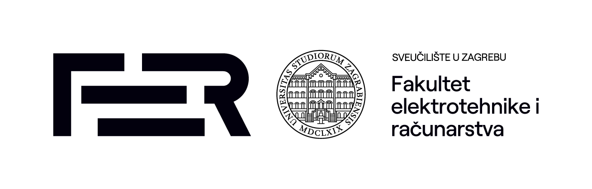

Cilj projekta je izrada novog modela primjene metoda umjetne inteligencije u protuminskim postupcima za humanitarno razminiranje, s fokusom na napredne postupke predstavljanja znanja i automatiziranog zaključivanja, poput računalnih ontologija, grafova znanja i višekriterijskih ekspertnih sustava. U okviru projekta izradit će se opservatorij podataka kao računalna platforma za humanitarno razminiranje u vidu integrirane baze znanja s ontološkim modelima koja će sadržavati strukturirane heterogene podatke o minsko sumnjivim područjima (MSP). Modelima strojnog i dubokog učenja predstavit će se indikatori prisutnosti minsko-eksplozivnih sredstava unutar MSP koristeći metode digitalne obrade slike, računalnog vida i klasifikacije objekata.